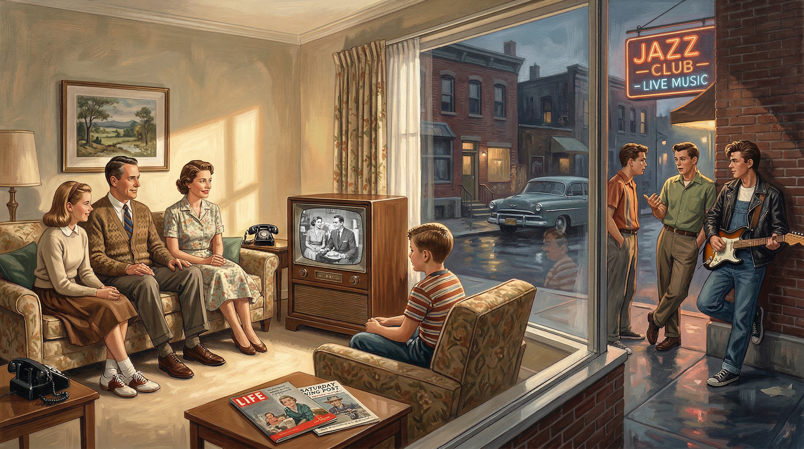
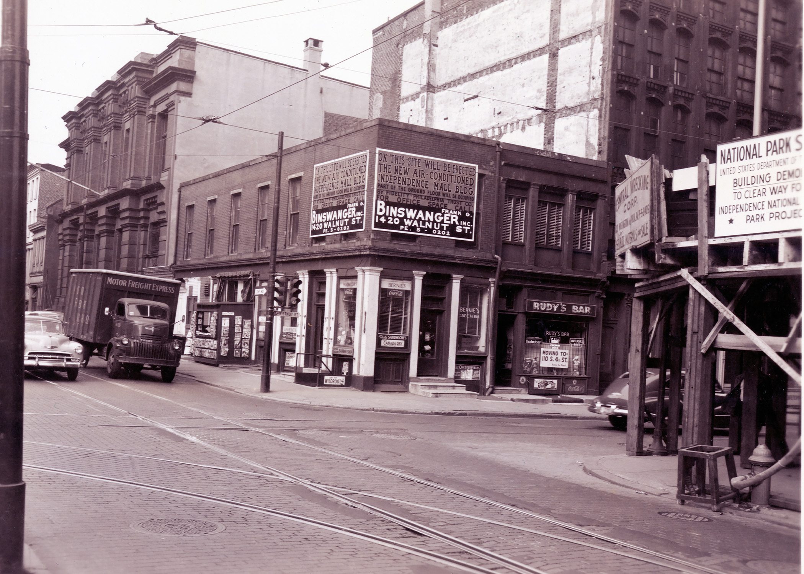
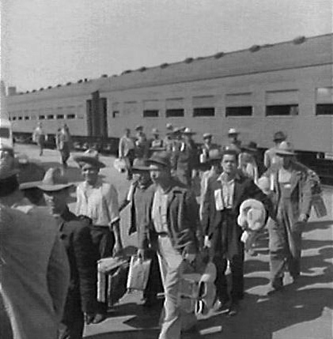
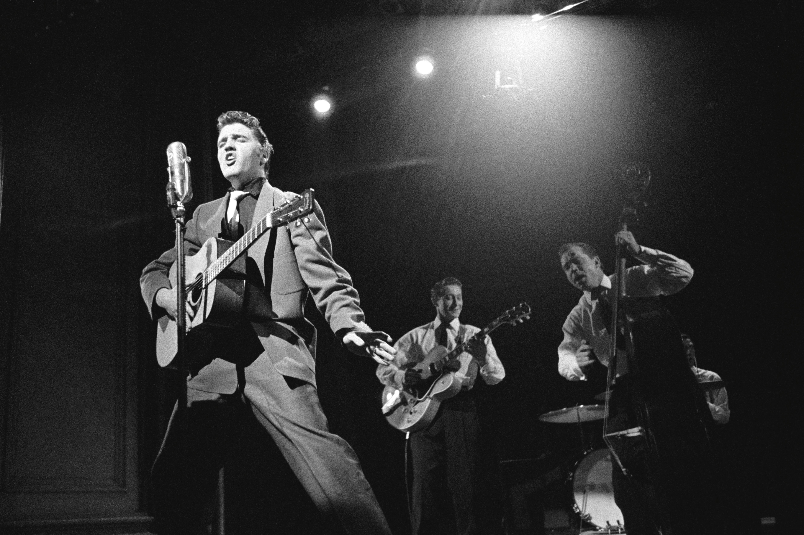
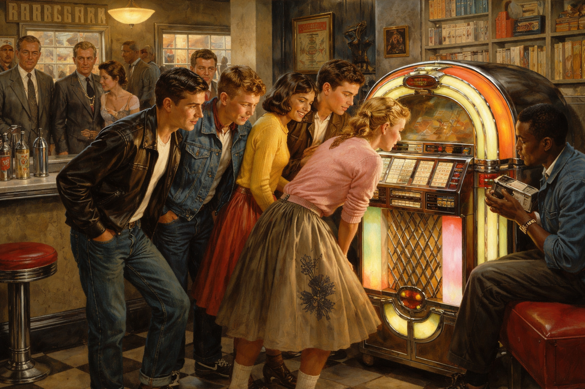

Core Objectives
- Analyze the role of television in shaping a national popular culture and reinforcing idealized gender and racial roles.
- Trace the musical and cultural roots of Rock 'n' Roll and its significance as a bridge between African American and white youth cultures.
- Contrast the values of the mainstream "Organization Man" society with the critiques offered by the Beat Generation.
Key Terms
Mass Media | Federal Communications Commission (FCC) | Beat Movement | Rock 'n' Roll | Jazz | Elvis Presley | Chuck Berry | Alan Freed | Jack Kerouac | Allen Ginsberg | Urban Renewal | Braceros | Termination Policy | White Flight
Introduction | The Screen, the Stage, and the Shadows
The 1950s are often remembered as a decade of unprecedented prosperity and suburban stability, driven largely by the technological revolution of television. While mass media broadcast a sanitized, uniform version of the American Dream into millions of living rooms, this polished image often masked a more turbulent reality. Beneath the surface of middle-class conformity, a rebellious youth culture and a daring literary avant-garde began to challenge the "Organization Man" ideals of the era. Simultaneously, millions of Americans—including those in decaying urban centers and marginalized minority communities—remained excluded from the decade's economic boom, highlighting the deep contradictions within the postwar American experience.

The idealized vision of suburban conformity broadcast by mass media frequently masked the profound economic inequalities and the vibrant, rebellious youth cultures bubbling beneath the surface of the Cold War era.
Analysis Question: How did the uniform representation of American life on television contrast with the varied historical realities of the 1950s?
The Architecture of Conformity
The postwar era saw the rapid rise of a national popular culture, driven almost entirely by the explosive growth of television. As the medium transitioned from a luxury to a household staple, it began to homogenize American life, replacing regional distinctions with a standardized set of middle-class values and consumer habits. While these programs offered entertainment, they also functioned as social primers, reinforcing rigid gender roles and presenting an idealized, exclusively white version of society that ignored the diversity and struggles of the "Other America."
The Golden Age of Television
The decade following World War II witnessed an unprecedented revolution in how Americans communicated, entertained themselves, and understood their place in the world. At the center of this cultural earthquake was television. While the technology for television had existed prior to the war, its development and distribution had been halted by military priorities and the lack of civilian manufacturing. Once the war ended, however, the television set quickly became the ultimate symbol of the postwar American Dream, taking its place in the center of the suburban living room. The rapid adoption of this technology fueled the explosive growth of Mass Media—the means of communication that reach large, nationwide audiences simultaneously. In 1950, only about nine percent of American homes possessed a television set. By the end of the decade, that number had skyrocketed to nearly ninety percent. This miraculous expansion permanently altered the landscape of American entertainment, business, and politics.
The frantic rush to build new television stations across the country initially overwhelmed the federal government. The Federal Communications Commission (FCC), the government agency tasked with regulating and licensing television, telephone, telegraph, and radio industries, was forced to issue a temporary freeze on new station licenses while it figured out how to manage the rapidly crowding broadcast spectrum. When the FCC finally lifted this freeze in 1952, the floodgates opened. Nearly five hundred new television stations began broadcasting across the United States within a few short years. To provide programming for these new stations, the major radio networks—NBC, CBS, and ABC—transitioned their financial resources and their biggest stars over to television. This era became known as the "Golden Age" of television, characterized by live broadcasts, original dramatic plays, and immensely popular comedy programs like I Love Lucy, starring Lucille Ball and Desi Arnaz, which routinely drew tens of millions of viewers for a single episode.
A typical early 1950s television set, which rapidly became the centerpiece of American suburban living rooms.
Why it Matters: The television set served as a powerful engine for creating a uniform, national culture in the postwar era. By broadcasting standardized middle-class values and consumer habits into millions of homes, it homogenized American society and drove the decade's intense consumerism.
Explain why the mass adoption of the television set was significant in shaping a uniform national culture during the 1950s.
Television did more than just entertain; it served as a powerful engine for creating a uniform, national culture. Before television, American culture was highly regional, with different areas of the country possessing distinct styles of dress, speech, and entertainment. Television homogenized the nation. People in California, Texas, and New York were suddenly laughing at the same jokes, buying the same products, and adopting the same middle-class values projected on their glowing screens. The advertising industry seized upon this new medium with ferocious energy. Because television allowed advertisers to combine sight, sound, and motion into a single persuasive message, companies poured millions of dollars into television commercials. Products like toothpaste, automobiles, and cosmetics were marketed not just as useful items, but as essential components of a happy, successful American life. The television commercial became the driving force behind the decade's intense consumerism.
Checkpoint
1. What was an initial challenge the federal government faced during the rapid expansion of television in the early 1950s?
2. How did the widespread adoption of television most significantly affect American culture in the 1950s?
Scripted Ethics | The Idealized American Dream
The image of America projected by television networks during this era was deeply sanitized and deliberately exclusive, serving as a digital fortress for middle-class values. In an effort to avoid offending corporate advertisers or alienating conservative viewers, television executives presented a highly stylized and idealized version of society that ignored the complexities of the human experience. This "standard" television family was invariably white, middle-class, and situated within a pristine suburban home, effectively creating a visual shorthand for the American Dream that left little room for variation or dissent.
A 1950s marketing illustration portraying an idealized, exclusively white suburban family.
Why it Matters: These stylized representations functioned as social primers that rigidly reinforced traditional gender roles and presented a very narrow version of the American Dream. By omitting minorities and working-class struggles, such media implicitly taught the public that "true" success meant conforming to the white, middle-class suburban ideal.
How does this idealized illustration reflect the broader effort by television networks and advertisers to avoid controversy and promote middle-class conformity?
These programs functioned as a social primer, rigidly reinforcing traditional gender roles through every script and camera angle. The father was consistently portrayed as the wise, well-dressed breadwinner—the undisputed head of the household who navigated the professional world. Conversely, the mother was depicted as a cheerful, perfectly groomed homemaker whose world was confined to the domestic sphere; her greatest challenges rarely exceeded the stakes of baking a perfect cake or managing a minor, humorous misunderstanding with a neighbor. By presenting these narrow archetypes as the universal norm, mass media suggested that any deviation from these roles was not only unusual but an affront to the stable American identity.
Perhaps most significant was the profound silence regarding the diversity of the American experience. There was almost no representation of the poverty, racial discrimination, or urban decay that defined the daily reality for millions of citizens living outside the suburban bubble. By completely omitting minorities and working-class struggles from the screen, television implicitly taught the public that to be a "true" and successful American meant conforming exactly to the white, suburban ideal. This manufactured reality effectively pushed the struggles of marginalized communities into the shadows, making the eventual "Other America" seem all the more invisible to the viewers at home.
Checkpoint
3. What was the typical portrayal of gender roles on 1950s television programs?
4. What was a significant consequence of how 1950s television depicted the "American Dream"?
The Shadows of Prosperity
While the "Organization Man" flourished in the suburbs, the phenomenon of "White Flight" systematically starved American cities of the resources needed to maintain basic infrastructure. This led to a cycle of urban decay and the implementation of "Urban Renewal" projects that frequently displaced minority communities rather than helping them. During this same period, federal policies like the Bracero program and the Termination Policy placed immense pressure on Mexican American and Native American populations, often forcing assimilation or causing economic devastation.
The Other America
While the television networks broadcast endless images of affluent, carefree suburbanites, a profoundly different reality existed just outside the camera's frame. The postwar economic boom did not lift all boats equally. In fact, the very forces that created the prosperous new suburbs directly contributed to the rapid deterioration of America's inner cities. As millions of middle-class white Americans utilized the GI Bill and new highway systems to move out of crowded urban centers and into spacious suburban developments, they participated in a massive demographic shift known as White Flight.

Bulldozers clearing a dense urban neighborhood during a 1950s federal urban renewal project.
Why it Matters: Urban renewal policies, intended to revitalize decaying inner cities, frequently resulted in the destruction of vibrant minority and working-class communities. As city planners used eminent domain to clear these areas for profitable commercial properties or highways, displaced families were pushed into even more crowded and neglected areas.
How did the migration of the middle class out of the cities directly cause the need for the urban renewal policies depicted here?
The consequences of this mass migration were devastating for the cities left behind. When affluent and middle-class residents moved to the suburbs, they took their economic resources and crucial tax dollars with them. The businesses, department stores, and industries that relied on their patronage quickly followed, relocating to newly built suburban shopping malls. This massive exodus starved city governments of the revenue needed to maintain basic infrastructure. As a result, city services declined rapidly. Public transportation systems deteriorated, public schools were severely underfunded, and city police and fire departments struggled to maintain adequate staffing. The cities became increasingly populated by those who could not afford to leave, or who were explicitly barred from moving to the suburbs due to the racist housing policies and restrictive covenants enforced by suburban developers and banks. Consequently, inner-city neighborhoods became deeply impoverished and racially segregated, creating a cycle of poverty that was almost impossible to escape.
To address the alarming decay of the urban core, the federal government and local politicians championed a policy known as Urban Renewal. The stated goal of this policy was to revitalize deteriorating inner cities by tearing down run-down neighborhoods and replacing them with modern, safe, and affordable housing. In practice, however, urban renewal frequently proved disastrous for the very people it was supposed to help. Armed with federal funds and the power of eminent domain, city planners targeted minority neighborhoods, declaring them to be "slums" or "blighted areas." The government seized the properties, evicted the residents, and demolished entire communities with bulldozers and wrecking balls.
Tragically, the land cleared by urban renewal was rarely used to build the promised affordable housing for the displaced residents. Instead, city governments and private developers used the newly cleared, highly valuable urban real estate to construct profitable commercial properties, luxury high-rise apartments, massive sports stadiums, or sweeping new segments of the interstate highway system designed to make it easier for suburban commuters to drive into the city. Hundreds of thousands of poor African American, Latino, and working-class white families lost their homes, their businesses, and their tight-knit communities. Forced to relocate, these displaced families were often pushed into even more crowded, neglected areas of the city, or into newly constructed, isolating public housing projects. Because the policy so frequently resulted in the destruction of vibrant minority neighborhoods for the benefit of commercial developers, bitter critics of the program quickly renamed it "urban removal."
Checkpoint
5. How did "White Flight" directly impact American inner cities during the postwar era?
6. What was the actual consequence of most "Urban Renewal" projects for minority and working-class urban residents?
Minority Struggles in a Postwar World
The stark contrast between the affluent American mainstream and the marginalized populations was glaringly evident in the treatment of specific minority groups during the postwar era. While the middle class celebrated the triumphs of the modern economy, Mexican Americans and Native Americans faced aggressive federal policies that threatened their livelihoods and their very existence as distinct communities.

Mexican workers arriving in the United States under the federal Bracero program in the 1950s.
Why it Matters: The Bracero program highlights the stark contrast between the affluent American mainstream and marginalized populations whose labor was exploited. Despite being essential to American agriculture, these temporary workers frequently endured horrific conditions and were denied basic labor protections, underscoring the deep racial and economic inequalities of the era.
What does the implementation and reliance on the Bracero program reveal about the underlying economic inequalities of the postwar agricultural industry?
During the severe labor shortages of World War II, the United States government had initiated a program to bring agricultural workers from Mexico into the United States to harvest crops on massive western farms. These temporary laborers were known as Braceros, from the Spanish word for manual laborer. When the war ended, American agriculture had become deeply dependent on this highly profitable source of cheap labor, and the federal government allowed the bracero program to continue. Hundreds of thousands of Mexican citizens legally entered the United States on short-term contracts. However, the reality of their employment was often brutal. Braceros were frequently subjected to horrific working conditions, housed in squalid, unsanitary camps, and paid wages far below the legal minimum. Because their legal status in the country was tied entirely to their specific employer, they could not unionize or protest their treatment without facing immediate deportation. Furthermore, the presence of the braceros was used by wealthy farm owners to drive down the wages of domestic Mexican American workers, creating deep economic hardship and racial tensions throughout the American Southwest. When public anxiety over illegal immigration spiked in 1954, the federal government launched "Operation Wetback," a massive, militarized deportation drive that indiscriminately rounded up and deported over a million people of Mexican descent, including many who were legal United States citizens, further terrorizing the Mexican American community.
Native Americans faced an equally aggressive and destructive set of federal policies during the 1950s. Since the 1930s, the government had generally supported the Indian Reorganization Act, which encouraged Native American tribes to maintain their cultural traditions, govern themselves, and hold onto their reservation lands. However, in 1953, the federal government abruptly reversed course, adopting a radical new approach known as the Termination Policy. Driven by a desire to force Native Americans to assimilate into mainstream white society and to eliminate the financial burden of fulfilling historic treaty obligations, the government announced that it would permanently end its official relationship with Native American tribes.
Under the Termination Policy, the federal government withdrew all official recognition of tribal sovereignty, discontinued federal economic support, and distributed previously protected reservation lands to individual tribal members, making that land subject to local taxation and easy to sell to outside commercial interests. To accelerate the assimilation process, the government also launched a massive "Voluntary Relocation Program," aggressively encouraging Native Americans to leave their rural reservations and move to major urban centers like Chicago, Los Angeles, and Denver. The government promised job training, housing assistance, and a path to the middle-class American Dream. The reality was a catastrophic failure. The promised job training was often nonexistent or entirely inadequate. Native Americans who moved to the cities found themselves isolated, facing severe racial discrimination, and trapped in devastating urban poverty. Without the traditional support structures of their tribal communities, and stripped of their lands and federal protections, Native Americans suffered some of the highest rates of unemployment, alcoholism, and infant mortality in the nation. The Termination Policy was ultimately recognized as a profound disaster and was abandoned in the following decade, but the damage inflicted upon Native American communities and land holdings was immense and long-lasting.
Checkpoint
7. What was the reality for many Mexican agricultural workers who came to the US under the Bracero program?
8. What was the primary goal of the federal government's 1953 "Termination Policy" regarding Native American tribes?
The Pulse of Rebellion
A profound cultural shift began to brew as the Beat Generation rejected the spiritual emptiness of material wealth and corporate conformity. These writers and artists celebrated unconventional lifestyles and authentic expression, laying the intellectual groundwork for future countercultures. Simultaneously, the emergence of Rock 'n' Roll—rooted in African American musical traditions—shattered the polite silence of the decade. Despite intense backlash from the older generation, this new sound created a permanent "generation gap" and provided the baby boom generation with a defiant new identity.
Voices of Dissent | The Beat Generation
While the economic realities of the inner city exposed the failures of the postwar economy, a profound cultural rebellion began to brew among a small, highly influential group of writers, poets, and artists. These individuals looked at the gleaming suburbs, the rigid corporate culture, and the sanitized television screens of the 1950s and felt a deep sense of spiritual emptiness. They rejected the prevailing belief that accumulating material wealth and conforming to the expectations of the "Organization Man" was the ultimate purpose of human existence. This literary and cultural rebellion became known as the Beat Movement, and its followers—often referred to as "beatniks" by a mocking mainstream press—laid the intellectual groundwork for the massive counterculture revolutions of the 1960s.
Jack Kerouac's original 120-foot manuscript scroll of his 1957 novel "On the Road."
Why it Matters: Jack Kerouac's frantic, unbroken writing process physically embodied the Beat Generation's rejection of rigid, mechanized corporate culture. His spontaneous prose captured the restless search for authentic experience and laid the intellectual groundwork for future counterculture movements against mainstream conformity.
Compare the chaotic, unconventional style of Kerouac's writing process to the values of the "Organization Man" prevalent in 1950s society.
Centered primarily in the bohemian coffeehouses and jazz clubs of New York City's Greenwich Village, San Francisco's North Beach, and Venice, California, the Beats sought a higher, more authentic form of consciousness. They believed that the intense pressure to conform to traditional American values was destroying individual creativity and individual freedom. To combat this, the Beats embraced a lifestyle that was deliberately unconventional. They shunned regular nine-to-five employment, adopted voluntary poverty, wore casual, unkempt clothing, and lived in cheap, sparsely furnished apartments. They sought spiritual enlightenment outside the bounds of traditional Western religion, heavily exploring Eastern philosophies such as Zen Buddhism. They also aggressively pushed the boundaries of acceptable social behavior by exploring open sexuality, utilizing mind-altering drugs, and celebrating the raw, improvisational energy of African American music.
The literary output of the Beat Movement was chaotic, highly emotional, and fiercely critical of mainstream society. The most famous voice of the movement was the novelist Jack Kerouac. In 1957, Kerouac published On the Road, a frantic, semi-autobiographical novel that detailed his restless, cross-country travels with his friends. Writing in a spontaneous, unbroken rush of prose—famously typing the entire manuscript on a single, continuous 120-foot scroll of paper to avoid the interruption of changing pages—Kerouac captured the exhausting, exhilarating search for authentic experience in a plastic, mechanized world. The novel became an immediate sensation among young people who felt trapped by the expectations of their parents, elevating Kerouac to the reluctant role of spokesman for a new, disillusioned generation.
Equally impactful was the poetry of Allen Ginsberg. In 1956, Ginsberg published a long, explosive poem titled Howl. The poem opened with the famous lament, "I saw the best minds of my generation destroyed by madness, starving hysterical naked," and proceeded to deliver a furious, rhythmic denunciation of modern American capitalism, which Ginsberg characterized as a soulless, mechanical monster named "Moloch" that devoured human individuality and creativity. The poem's explicit language and controversial subject matter immediately drew the attention of local authorities, leading to a highly publicized obscenity trial in San Francisco. The judge ultimately ruled that the poem possessed redeeming social value and was protected by the First Amendment, a landmark legal victory that effectively ended strict literary censorship in the United States and cemented the Beat Movement as a legitimate, powerful force of cultural dissent against the conformity of the era.
Checkpoint
9. What was the primary philosophical stance of the Beat Generation in the 1950s?
10. What significant legal precedent was set by the obscenity trial surrounding Allen Ginsberg’s poem Howl?
The Sound of Rebellion | The Rise of Rock 'n' Roll
While the Beat Movement provided an intellectual critique of American society, a much louder, more visceral rebellion was taking hold among the nation's teenagers. The rigid, sanitized culture of the 1950s was utterly shattered by the emergence of a new, electrifying style of music that refused to be quiet, polite, or segregated. This music provided the massive baby boom generation with an identity entirely distinct from their parents, creating a permanent cultural rift known as the "generation gap."
The roots of this new music lay deep within the African American musical traditions of the rural South and the urban North. For decades, Black musicians had been perfecting the complex, improvisational rhythms of Jazz, the emotional storytelling of the blues, and the high-energy, danceable sounds of rhythm and blues. Because of the strict racial segregation of the era, these musical styles were largely confined to African American radio stations and record labels. Mainstream white radio stations refused to play "race records," offering their audiences a steady diet of safe, gentle pop crooners. However, the invention of the inexpensive, portable transistor radio, along with the popularity of car radios, allowed white teenagers to quietly scan the radio dial late at night, discovering the heavy, infectious beat of rhythm and blues broadcasting from distant cities.
In 1951, a white disc jockey in Cleveland, Ohio, named Alan Freed noticed that white teenagers were increasingly buying rhythm and blues records at local music stores. Realizing the massive crossover potential of the music, Freed began playing the records of African American artists on his mainstream radio program. To avoid the racial stigma attached to the term "rhythm and blues," Freed popularized a new phrase to describe the music, calling it Rock 'n' Roll. The music was defined by a heavy, driving backbeat, simple, repetitive lyrics, and the prominent use of the newly invented solid-body electric guitar. It was loud, fast, and demanded physical movement, standing in stark, thrilling contrast to the calm, orderly world of the 1950s suburb.
The true breakthrough of Rock 'n' Roll occurred when a new generation of brilliant artists began writing songs specifically tailored to the experiences and anxieties of teenagers. The most important of these early pioneers was Chuck Berry, an extraordinarily talented African American guitarist and songwriter. Berry wrote electrifying songs like "Maybellene" and "Johnny B. Goode," capturing the teenage obsessions with fast cars, school, and young romance. Berry's explosive guitar solos and energetic stage presence laid the absolute foundation for the future of rock music.

Elvis Presley performing live on stage during his explosive rise to superstardom in 1956.
Why it Matters: Presley's suggestive stage presence and synthesis of African American musical traditions utterly shattered the polite, segregated silence of the 1950s. His phenomenal success provided the baby boom generation with a distinct, rebellious identity that permanently established the modern "generation gap."
Explain the consequences of Elvis Presley's immense popularity on the cultural divide between the older generation and the emerging youth culture.
However, because of the deeply entrenched racism of the era, African American artists like Berry still faced significant barriers to achieving massive mainstream superstardom. The music industry realized that to sell millions of records to a segregated nation, they needed a white artist who could capture the sound, the rhythm, and the swagger of African American music. They found that artist in a young truck driver from Tupelo, Mississippi, named Elvis Presley. Combining the influences of country music, gospel, and the rhythm and blues he had absorbed growing up in the segregated South, Presley possessed a powerful, unique voice and a highly suggestive, rebellious stage presence. When Presley released his first major hit, "Heartbreak Hotel," in 1956, he became a cultural phenomenon overnight. Nicknamed the "King of Rock 'n' Roll," his records sold in the tens of millions, and his live performances provoked hysterical reactions from teenage audiences.
The sudden, explosive popularity of Rock 'n' Roll terrified the older generation. Conservative adults, religious leaders, and politicians viewed the music as a profound threat to the moral fabric of the nation. They argued that the heavy rhythms and rebellious lyrics would lead directly to juvenile delinquency, teenage pregnancy, and a total collapse of respect for authority. Furthermore, much of the adult outrage was thinly veiled racism; they were horrified that white teenagers were enthusiastically embracing a culture rooted in the African American experience. City councils attempted to ban Rock 'n' Roll concerts, radio stations refused to play the music, and television variety shows, like the famous Ed Sullivan Show, initially ordered their cameramen to film Elvis Presley only from the waist up to hide his provocative dancing. Despite this massive adult backlash, Rock 'n' Roll could not be stopped. The music became the defining soundtrack of the postwar youth culture, profoundly reshaping American entertainment and proving that the powerful forces of integration and cultural change could not be forever contained by the rigid boundaries of the 1950s.
Checkpoint
11. From which musical traditions did the early sounds of Rock 'n' Roll primarily evolve?
12. Why were the older generation and conservative adults so terrified by the sudden popularity of Rock 'n' Roll?
American Experience | The Invention of the Teenager
Prior to the post-World War II economic boom, the concept of the "teenager" barely existed in American society. During the hardships of the Great Depression and the national mobilization of the war, young people transitioned rapidly from childhood directly into adulthood. High school graduation rates were relatively low, as young men and women were expected to quickly enter the workforce to help support their struggling families or, during the war, to join the military. There was no distinct period of prolonged adolescence, and certainly no economic independence associated with those transitional years.

Unprecedented post-war economic affluence delayed entry into the adult workforce, creating a new demographic of teenagers with disposable income and leisure time that fueled a massive, independent youth culture distinct from their parents.
The Rise of Youth Culture
The unprecedented affluence of the 1950s radically altered the American life cycle. With the economy booming and the middle class secure in steady corporate jobs, parents no longer required their children to work for the family's survival. Instead, adolescents were encouraged to stay in high school, participate in extracurricular activities, and enjoy their youth. For the first time in history, millions of young people found themselves with significant amounts of free time and, crucially, their own disposable income, earned from allowances or part-time after-school jobs.
Corporate America and the advertising industry quickly recognized this massive new demographic. They began aggressively targeting products directly at teenagers, creating a multi-billion dollar market entirely separate from adult consumers. The "teenager" became a powerful economic category, driving the sales of comic books, blue jeans, cosmetic products, and, most importantly, Rock 'n' Roll records. This targeted marketing created a distinct, unified youth culture with its own fashion, its own slang, and its own rebellious music. This shared culture alienated the older generation and officially established the modern "generation gap," transforming teenagers from mere dependents into a powerful, independent cultural force that would eventually fuel the massive social and political upheavals of the 1960s.
Analytical Questions
Trace the Cause: Explain how the shift from an agrarian and depression-era economy to post-war affluence served as the primary catalyst for the "invention" of the modern teenager.
Analyze the Impact: In what ways did the emergence of a multi-billion dollar youth market transition the teenager from a family dependent to a distinct and influential economic power?
Assess the Legacy: Evaluate how the development of a unique teenage identity in the 1950s contributed to the "generation gap" and laid the social groundwork for the counterculture movements of the 1960s.
Vocabulary Activity
Narrative Cloze
The 1950s was defined by the rise of 1. , particularly television, which created a uniform national culture. To manage the explosion of new stations, the 2. had to regulate the broadcast spectrum. As middle-class families participated in 3. by moving to the suburbs, inner cities suffered from declining tax bases. The government attempted to fix this through 4. , though it often resulted in "urban removal" for minority residents.
Rural areas also saw shifts as 5. provided cheap Mexican labor for farms, while Native Americans saw their tribal sovereignty threatened by the 6. . In the cities, the 7. sought spiritual authenticity through unconventional lifestyles. Figures like 8. explored this restlessness in the novel *On the Road*, while the poet 9. challenged social norms in *Howl*.
Teenagers found their own voice through 10. , a genre with roots in African American 11. and rhythm and blues. Disc jockey 12. helped popularize the term to reach white audiences. While artists like 13. pioneered the sound with the electric guitar, it was 14. who became the "King" of the genre, provincializing the era's rigid boundaries.